Chapter 1: Database Foundations¶
Start here. This chapter explains what data and databases are, why a database management system beats a pile of files, and how sixty years of history led from IBM's IMS to cloud and vector databases. It introduces the main data models, tables and keys, ACID transactions, the OLTP/OLAP split and the ways databases are deployed, then surveys the 2026 landscape, shows how applications talk to databases, follows a real 'Buy' click through one, and maps the people who work with data.
1.1 Data, Information and Why We Store It¶
Data are raw facts: numbers, words, dates, clicks, sensor readings. Information is data that has been organised and put in context so it answers a question someone cares about. Databases exist so that data can be kept safely and turned into information quickly, again and again.
Think of it like…
Data is a pile of loose receipts in a shoebox; information is the monthly spending summary you get after sorting and adding them up.
Real-world example
The fictional Maple Street Bakery's till records about 1,200 sales a week, each one a line like '2026-10-03 08:14, croissant, 2, £3.60'. On its own each line says little. When the owner, Amara, totals croissant sales by weather and weekday, she learns that rainy Mondays sell 30% fewer croissants, so she bakes fewer and cuts waste.
How it works¶
- Capture: a till, app, form or sensor records raw facts as they happen.
- Store: the facts are written into a database so they survive power cuts and crashes.
- Organise: data is given structure — named fields, types and links between records.
- Query: someone asks a question, for example 'sales per product per week'.
- Interpret: the answer, read in context, becomes information and then a decision.
Who uses it
Everyone who works with computers meets data, but analysts, developers, data engineers and managers turn it into information daily in retail, banking, healthcare, government and science.
Key takeaway
Learn the DIKW pyramid (Data, Information, Knowledge, Wisdom) and the three shapes of data — structured, semi-structured and unstructured — as they appear in almost every introductory exam.
Going deeper
- Structured data fits fixed named columns (orders, payroll); semi-structured data carries its own labels (JSON, XML, log lines); unstructured data has no predefined model (photos, audio, free text) and needs extra processing before it can be queried.
- Metadata is data about data: column names, types, units, owners, creation dates and lineage. Without it a column called 'amt' could mean pounds, pence or kilograms, and every report built on it becomes a guess.
- Data quality is usually judged on six dimensions — accuracy, completeness, consistency, timeliness, validity and uniqueness. A database can enforce validity and uniqueness with constraints, but accuracy still depends on how the data was captured.
- Storage is cheap but not free: an order row of about 150 bytes means ten million orders take roughly 1.5 GB before indexes, which often double or triple the space used.
- Personal data — anything identifying a living person, such as a name, email or device ID — is regulated by laws like the EU GDPR, so what you store, for how long and who reads it are design decisions.
Common mistakes & misconceptions
- Using 'data' and 'information' as synonyms: data is raw facts; information is data processed into context that answers a question.
- Storing numbers or dates as text such as '£3.60' or '03/10/26' — sorting, summing and comparing then break; store numeric and date types and format on display.
- Believing more data automatically means better decisions: poor-quality data produces confident but wrong answers (garbage in, garbage out).
Try it: Turn raw sales lines into information with SQLite (install sqlite3, then paste)¶
sqlite3 bakery.db
CREATE TABLE sales(sold_at TEXT, item TEXT, qty INTEGER, unit_price REAL);
INSERT INTO sales VALUES
('2026-10-05 08:14','croissant',2,1.80),
('2026-10-05 08:20','bagel',1,2.10),
('2026-10-06 09:02','croissant',3,1.80);
SELECT item, SUM(qty) AS units, SUM(qty*unit_price) AS revenue
FROM sales GROUP BY item ORDER BY revenue DESC;
Key databases, concepts, languages, tools & standards¶
| Name | What it does | Example |
|---|---|---|
| Data General computing term · Concept · Current · Beginner · General |
Raw, unprocessed facts such as numbers, text, dates or measurements, with no interpretation attached. | '2026-10-03, 08:14, croissant, 2' is a data record captured by a bakery till. |
| Information General computing term · Concept · Current · Beginner · General |
Data organised and placed in context so that it answers a question or supports a decision. | 'Croissant sales fall 30% on rainy Mondays' is information derived from months of till data. |
| DIKW pyramid Information-science model (Ackoff, 1989) · Concept · Current · Beginner · General |
A model showing Data refined into Information, Knowledge and finally Wisdom, each layer adding meaning. | A lecturer uses DIKW to explain why a dashboard (information) is not the same as a business strategy (wisdom). |
| Structured data General data-management term · Concept · Current · Beginner · Relational |
Data with a fixed, predefined shape — named fields with known types — that fits naturally into tables. | Bank transactions with account, amount, currency and timestamp columns are structured data. |
| Semi-structured data General data-management term · Concept · Current · Beginner · Document |
Data that carries its own labels and nesting, such as JSON or XML, but whose shape can vary between records. | Two customer JSON documents, one with a 'twitter' field and one without, are semi-structured. |
| Unstructured data General data-management term · Concept · Current · Beginner · General |
Content with no predefined data model — images, audio, video, PDFs, free text — that needs extraction or embeddings before querying. | A support team stores call recordings, then transcribes them so the text can be searched. |
| Metadata General data-management term · Concept · Current · Beginner · General |
Data that describes other data: names, types, units, owners, creation time, source and meaning. | A data catalogue records that column 'amt_gbp' holds order totals in pounds, owned by the finance team. |
| Record and field General data-management term · Concept · Current · Beginner · General |
A record groups facts about one thing; a field is one named fact inside it. In tables they become rows and columns. | One student record has fields student_id, name, date_of_birth and course. |
| Data type Every DBMS and programming language · Concept · Current · Beginner · General |
The kind of value a field holds — integer, decimal, text, date, boolean, binary — which controls valid values and operations. | Declaring price as DECIMAL(10,2) stops 'ten pounds' being stored and makes SUM(price) exact. |
| Data quality DAMA DMBOK and industry practice · Concept · Current · Intermediate · General |
How fit data is for use, judged on accuracy, completeness, consistency, timeliness, validity and uniqueness. | Finding 4% of customer emails missing an '@' prompts a validation rule on the sign-up form. |
| Garbage in, garbage out (GIGO) Computing proverb, 1950s-60s · Concept · Current · Beginner · General |
The principle that flawed input data produces flawed output, however clever the software processing it. | A sales forecast trained on duplicated orders predicts double the real demand. |
| Personal data EU GDPR Article 4 · Concept · Current · Beginner · General |
Any information relating to an identifiable living person, such as a name, email, IP address or location. | A gym's members table holds personal data, so access is restricted and old records are deleted on schedule. |
| Data lifecycle DAMA DMBOK and industry practice · Concept · Current · Intermediate · General |
The stages data passes through: create, store, use, share, archive and destroy, each with its own rules. | Invoices are kept live for two years, archived for six more for tax law, then securely deleted. |
1.2 What a Database and a DBMS Are¶
A database is an organised collection of related data stored so that it can be found, changed and shared reliably. A database management system (DBMS) is the software that looks after it: it stores the data on disk, answers questions, keeps many users from tripping over each other and recovers after crashes. People often say 'database' when they mean the DBMS, such as PostgreSQL or MongoDB.
Think of it like…
The database is the library's collection of books; the DBMS is the librarian, catalogue, lending desk and security guard that let thousands of readers find, borrow and return books without chaos.
Real-world example
The fictional Riverside Medical Practice keeps 18,000 patient records in PostgreSQL. Receptionists book appointments, doctors add notes and the pharmacy system reads prescriptions — all at the same moment. The DBMS checks each user's permissions, stops two receptionists booking the same slot, and after a power cut it replays its log so no confirmed booking is lost.
How it works¶
- An application sends a request (usually a query in SQL) to the DBMS over a connection.
- The DBMS checks who is asking and whether they are allowed to do it.
- It plans the cheapest way to find the data, for example using an index.
- It reads or changes data in memory and records changes in a log for safety.
- It returns results and makes committed changes durable on disk.
Who uses it
Every software team uses a DBMS; database administrators run them, developers write queries against them, and analysts query copies of their data.
Key takeaway
Be precise in interviews: 'database' is the data, 'DBMS' is the software, and 'database system' is both together plus the applications using them.
Going deeper
- A DBMS hides physical storage behind a logical model — this is data independence, described in the ANSI/SPARC three-schema architecture (1975): external views, a conceptual schema and an internal schema can each change without breaking the others.
- Most DBMSs keep a system catalogue (data dictionary) of their own tables, columns, indexes and permissions, stored as tables you can query — PostgreSQL's pg_catalog and the standard information_schema are examples.
- Terminology differs: in PostgreSQL one server process group is a 'cluster' holding many databases, each with schemas; in MySQL 'database' and 'schema' are synonyms; in Oracle a schema is tied to a user account.
- A DBMS mediates every access, so it can enforce rules centrally: one CHECK constraint protects data from every application, script and person, instead of trusting each program to validate input itself.
- Under the surface a DBMS is a stack of components — parser, optimiser, executor, buffer manager, storage engine, log and lock manager — which later chapters open up one by one.
Common mistakes & misconceptions
- Calling Excel or a CSV folder a 'database': they store data but lack a DBMS's concurrency control, crash recovery and enforced integrity.
- Assuming one DBMS server equals one database: most servers host many databases, each with its own schemas, users and permissions.
- Thinking the DBMS only stores data: its value is equally in safe concurrent access, recovery and security.
Try it: Ask a running PostgreSQL server what it is (psql)¶
psql -h localhost -U postgres -c "SELECT version();"
psql -h localhost -U postgres -c "\l" # list databases
psql -h localhost -U postgres -c "SHOW data_directory;"
Key databases, concepts, languages, tools & standards¶
| Name | What it does | Example |
|---|---|---|
| Database General term · Concept · Current · Beginner · General |
An organised, persistent collection of related data designed to be queried and updated by many users and programs. | A university's database holds students, courses, enrolments and grades in linked tables. |
| Database management system (DBMS) General term · Concept · Current · Beginner · General |
Software that stores, retrieves, secures and recovers data in databases and coordinates concurrent users. | PostgreSQL, MySQL, Oracle Database, SQL Server, MongoDB and SQLite are all DBMSs. |
| RDBMS Term for DBMSs based on Codd's relational model · Concept · Current · Beginner · Relational |
A relational DBMS: one that stores data as tables of rows and columns and is queried mainly with SQL. | A bank's core ledger runs on an RDBMS such as Oracle Database or IBM Db2. |
| Database system Textbook term · Concept · Current · Beginner · General |
The combination of the database, the DBMS software and the applications that use them. | An online shop's database system is its PostgreSQL server, its order data and the web app. |
| Data independence ANSI/SPARC architecture, 1975 · Concept · Current · Intermediate · General |
The ability to change how data is stored or organised without rewriting the applications that use it. | A DBA adds an index and moves tables to faster disks; no application code changes. |
| ANSI/SPARC three-schema architecture ANSI/X3/SPARC Study Group, 1975 · Standard · Legacy · Intermediate · General |
A reference model separating external views, the conceptual schema and the internal (physical) schema of a database. | Students learn that a 'managers' view hides salary columns (external) while tables (conceptual) live in files (internal). |
| System catalogue (data dictionary) Every DBMS; information_schema in ISO SQL · Feature · Current · Intermediate · General |
Internal tables describing every table, column, index, user and permission in the database. | SELECT table_name FROM information_schema.tables WHERE table_schema = 'public'; lists your PostgreSQL tables. |
| Database instance Oracle, SQL Server and general usage · Concept · Current · Intermediate · General |
A running copy of the DBMS software — processes plus memory — serving one or more databases. | A developer runs a PostgreSQL instance on port 5432 and a second test instance on 5433. |
| Schema (namespace) ISO SQL and most RDBMSs · Concept · Current · Beginner · Relational |
A named container inside a database that groups tables, views and other objects, often per application or team. | Tables billing.invoices and hr.employees live in separate schemas with separate permissions. |
| Query General term · Concept · Current · Beginner · General |
A request to a database to read or change data, usually written in a query language such as SQL. | SELECT name FROM patients WHERE date_of_birth < '1950-01-01'; asks for older patients. |
| Concurrency control Core DBMS function · Concept · Current · Intermediate · General |
The DBMS mechanisms that let many users read and write at once without corrupting data or seeing half-done changes. | Two receptionists click 'book 10:30' together; concurrency control lets only one booking succeed. |
| Crash recovery Core DBMS function · Concept · Current · Intermediate · General |
Restoring the database to a consistent state after a failure, keeping committed changes and undoing unfinished ones. | After a power cut, PostgreSQL replays its write-ahead log at start-up before accepting connections. |
| PostgreSQL PostgreSQL Global Development Group · Database · Current · Beginner · Relational |
A free, open-source object-relational DBMS known for standards compliance, extensibility and reliability; version 18 is current in October 2026. | A start-up chooses PostgreSQL for orders, JSON product data and geospatial delivery zones in one system. |
| SQLite D. Richard Hipp and the SQLite developers (public domain) · Database · Current · Beginner · Relational |
A small embedded SQL database stored in one file, built into phones, browsers and countless apps. | A note-taking app keeps every note in a single SQLite file on the user's laptop. |
1.3 Why Not Just Files or Spreadsheets?¶
Files and spreadsheets are fine for one person and small data. Once several people or programs share data, plain files lead to duplicates, contradictions, lost updates and slow searches. A DBMS solves these problems once, centrally, so every application benefits.
Spreadsheet or file vs DBMS
| Files / spreadsheets | DBMS | |
|---|---|---|
| Many users at once | Overwrites and conflicts | Locks or MVCC |
| Duplicate facts | Copied across files | Stored once, linked by keys |
| Bad values | Anything can be typed | Types and constraints |
| Crash mid-save | Corrupt or half-saved | Atomic commit, log replay |
| Size limit | Excel: 1,048,576 rows | Billions of rows |
| Security | Whole file or nothing | Per table, row, column |
| Questions | Manual filters | SQL queries, indexes |
Spreadsheets win on ease of starting; databases win once data is shared.
Think of it like…
A shared spreadsheet is like a family whiteboard: fine for a shopping list, but chaos if 50 people edit it at once, rub out each other's notes and nobody remembers who wrote what.
Real-world example
Leila runs the fictional Greenhill Football League from three spreadsheets: players, teams and fees. A player who changes phone number is updated in one file but not the other two, two volunteers overwrite each other's edits, and finding unpaid fees takes an hour of filtering. Moving to a small PostgreSQL database stores each phone number once, locks rows during edits and answers 'who hasn't paid?' in milliseconds.
How it works¶
- Identify the shared data and the people and programs that need it.
- Spot the file problems: duplication, inconsistent copies, no concurrent editing, weak security, no recovery.
- Move data into tables with keys so each fact is stored once.
- Add constraints and permissions so bad or unauthorised changes are refused.
- Point applications and reports at the database instead of copies of files.
Who uses it
Small businesses, research labs and charities often outgrow spreadsheets first; developers and data analysts are the people usually asked to migrate them.
Key takeaway
Memorise the classic file-processing problems from textbooks: data redundancy and inconsistency, difficulty accessing data, data isolation, integrity problems, atomicity problems, concurrent-access anomalies and security problems.
Going deeper
- A modern Excel worksheet is capped at 1,048,576 rows by 16,384 columns; a DBMS table has no practical row limit, and PostgreSQL allows a single table to reach 32 TB with default 8 KB pages.
- Update anomalies are the textbook reason for databases: if a customer's address is copied into every order file, changing it in one place leaves the others stale — normalised tables store it once.
- Atomicity matters for multi-step changes: moving £50 between two accounts in two files can crash halfway and lose money; a database transaction commits both changes or neither.
- Files are not useless — CSV and Parquet are excellent for exchanging and archiving data, and embedded engines such as SQLite and DuckDB can query them directly with full SQL.
- Spreadsheets remain a valid front end: many teams keep data in a database and connect Excel or Google Sheets to it for analysis, getting a familiar interface with a single source of truth.
Common mistakes & misconceptions
- Emailing spreadsheet copies around as a 'database': each copy diverges, and nobody knows which version is the truth.
- Over-engineering: a one-person list of 200 items does not need a database server — SQLite or a spreadsheet may be the right tool.
- Assuming a shared network folder gives safe concurrent editing: most file formats have no row-level locking, so the last save wins.
Try it: Import a CSV into SQLite and query it like a database¶
sqlite3 league.db
.mode csv
.import players.csv players
.mode table
SELECT team, COUNT(*) AS players FROM players GROUP BY team;
Key databases, concepts, languages, tools & standards¶
| Name | What it does | Example |
|---|---|---|
| File-processing system Textbook term (pre-DBMS approach) · Concept · Legacy · Beginner · General |
An approach where each program keeps its own data files, duplicating data and logic across applications. | Payroll and HR each keep their own employee file, so a name change must be made twice. |
| Data redundancy Textbook term · Concept · Current · Beginner · General |
The same fact stored in more than one place, wasting space and risking contradictory copies. | A customer's address appears in 300 order rows instead of once in a customers table. |
| Update anomaly Codd's normalisation theory · Concept · Current · Intermediate · Relational |
An inconsistency caused when a change is applied to some copies of duplicated data but not all. | A price is changed on the website file but not the invoicing file, so invoices are wrong. |
| Lost update Concurrency-control term · Concept · Current · Intermediate · General |
When two users edit the same data at once and one person's change silently overwrites the other's. | Two volunteers save the shared fees spreadsheet minutes apart; the first volunteer's payments vanish. |
| Single source of truth Data-management principle · Concept · Current · Beginner · General |
Keeping one authoritative copy of each fact that every report and application reads from. | Sales, finance and marketing dashboards all query one customers table instead of private exports. |
| CSV (comma-separated values) IETF RFC 4180 (2005) · Format · Current · Beginner · General |
A plain-text format with one record per line and fields separated by commas; universal for exchanging tabular data. | A bank lets customers download statements as CSV to import into accounting software. |
| Microsoft Excel Microsoft · Tool · Current · Beginner · General |
The dominant spreadsheet program; a worksheet holds up to 1,048,576 rows by 16,384 columns. | A finance analyst pulls monthly figures from SQL Server into Excel for a board pack. |
| Google Sheets Google · Tool · Current · Beginner · General |
A browser-based collaborative spreadsheet, popular for small shared lists; workbooks are capped at 10 million cells. | A club tracks volunteer shifts in Google Sheets before outgrowing it. |
| Microsoft Access Microsoft (part of Microsoft 365) · Database · Legacy · Beginner · Relational |
A desktop database combining a file-based relational engine with forms and reports; common in small offices and older systems. | A school office still runs its library loans in a 2010-era Access database. |
| Airtable Airtable Inc. · Service · Current · Beginner · Relational |
A cloud 'spreadsheet-database' hybrid with linked records, forms and views, aimed at non-programmers. | A small events company tracks venues, bookings and suppliers in linked Airtable bases. |
| Data integrity Core database principle · Concept · Current · Beginner · General |
The accuracy and consistency of data over its life, protected by types, keys, constraints and transactions. | A foreign key stops an order referencing a customer who does not exist. |
| Data silo Business and data-management term · Concept · Current · Beginner · General |
Data locked inside one team or system, invisible or incompatible with the rest of the organisation. | Marketing's email list and sales' CRM disagree on how many customers the firm has. |
1.4 A Short History of Databases¶
Databases began in the 1960s as navigational systems where programs followed pointers from record to record. In 1970 Edgar F. Codd proposed the relational model of simple tables, which led to SQL and to products such as Oracle, Db2 and later open-source MySQL and PostgreSQL. Since 2009 web-scale NoSQL systems, NewSQL, cloud databases and, most recently, vector databases for AI have joined them.
Think of it like…
It is like the history of maps: first turn-by-turn directions you had to follow exactly (navigational), then a grid map where you can ask for any place by its coordinates (relational), then specialised maps for different journeys (NoSQL, vector).
Real-world example
A student, Tom, compares two ways to list all of a supplier's parts. In a 1970s CODASYL system he writes a loop that finds the supplier record then follows 'next part' pointers one by one. In SQL he writes one declarative line — SELECT part FROM supplies WHERE supplier = 'Acme' — and the DBMS decides how to find them. That shift is the heart of Codd's revolution.
How it works¶
- 1960s: hierarchical (IBM IMS) and network (CODASYL, Bachman's IDS) databases navigate pointers.
- 1970: Codd's paper proposes relations queried by what you want, not how to find it.
- 1974-1983: IBM System R invents SEQUEL/SQL; Oracle (1979) and Db2 (1983) commercialise it.
- 1986-1996: SQL becomes an ANSI then ISO standard; open-source MySQL (1995) and PostgreSQL (1996) appear.
- 2006-2012: Bigtable and Dynamo papers inspire NoSQL; the term spreads after a 2009 meetup; Spanner shows global SQL.
- 2010s-2020s: managed cloud databases, separated storage and compute, serverless, and vector search for AI.
Who uses it
Interviewers, lecturers and architects use this history to explain why today's systems look the way they do; it is a standard first-lecture topic in database courses.
Key takeaway
Remember three names and dates: Charles Bachman (navigational databases, Turing Award 1973), Edgar F. Codd (relational model, 1970; Turing Award 1981) and Michael Stonebraker (Ingres and Postgres; Turing Award 2014).
Going deeper
- IBM built IMS (Information Management System) with North American Rockwell for the Apollo programme's bill of materials; first shipped around 1968, it still runs high-volume banking and insurance workloads on IBM mainframes today.
- Codd's June 1970 paper in Communications of the ACM, 'A Relational Model of Data for Large Shared Data Banks', separated the logical view from physical storage; IBM was slow to adopt it because IMS was profitable.
- System R's language was first called SEQUEL (Chamberlin and Boyce, 1974) and renamed SQL over a trademark conflict; Relational Software Inc., later renamed Oracle, shipped the first commercial SQL RDBMS, Oracle V2, in 1979.
- Google's Bigtable (2006) and Amazon's Dynamo (2007) papers showed how to scale across thousands of cheap servers by relaxing relational features; 'NoSQL' was popularised by a June 2009 San Francisco meetup on non-relational databases.
- Matthew Aslett of the 451 Group coined 'NewSQL' in 2011 for systems keeping SQL and ACID while scaling out; Google's Spanner paper (OSDI 2012) and later CockroachDB, TiDB and YugabyteDB followed that path.
- The 2020s brought AI-driven change: vector search arrived as specialised databases and as features inside PostgreSQL (pgvector), Oracle, SQL Server 2025, MongoDB and others, so similarity search became a mainstream database capability.
Common mistakes & misconceptions
- Thinking NoSQL replaced SQL: relational systems still top the DB-Engines ranking, and many NoSQL products have since added SQL-like languages and transactions.
- Crediting Oracle with inventing SQL: SQL came from IBM's System R research; Oracle was first to sell a commercial SQL product.
- Assuming 'legacy' means dead: IMS, mainframe Db2 and COBOL systems still process large shares of banking and airline transactions.
Key databases, concepts, languages, tools & standards¶
| Name | What it does | Example |
|---|---|---|
| IBM IMS IBM (with North American Rockwell), 1966-68 · Database · Legacy · Intermediate · General |
A hierarchical database and transaction manager first built for Apollo; still used on mainframes by large banks and insurers. | A bank's 1980s account system on IMS still processes millions of transactions nightly. |
| Integrated Data Store (IDS) Charles Bachman, General Electric, early 1960s · Database · Legacy · Advanced · General |
One of the first database management systems, using a navigational network model of linked records. | Bachman's IDS work earned him the 1973 Turing Award, the first given for databases. |
| CODASYL network model CODASYL Data Base Task Group, 1969-1971 · Data model · Legacy · Advanced · General |
A standard network data model where records are linked in owner-member sets and programs navigate pointers. | A 1970s program finds a supplier record, then loops through its 'supplies' set to list parts. |
| Codd's 1970 relational paper Edgar F. Codd, IBM; Communications of the ACM, June 1970 · Resource · Current · Intermediate · Relational |
'A Relational Model of Data for Large Shared Data Banks' — the paper that founded relational databases. | Database courses still assign this 11-page paper as foundational reading. |
| System R IBM San Jose Research, 1974-1979 · Database · Legacy · Advanced · Relational |
IBM's research prototype that proved the relational model practical and created SQL and cost-based optimisation. | Selinger's 1979 System R optimiser paper still underpins how query planners choose plans. |
| Ingres Michael Stonebraker and Eugene Wong, UC Berkeley, 1973 onward · Database · Legacy · Advanced · Relational |
An early relational research system using the QUEL language; its alumni founded Sybase and influenced SQL Server. | Stonebraker followed Ingres with Postgres (1986), ancestor of PostgreSQL. |
| Oracle V2 Relational Software Inc. (now Oracle Corporation), 1979 · Database · Legacy · Intermediate · Relational |
The first commercially available SQL relational database; there was never a 'version 1'. | Larry Ellison, Bob Miner and Ed Oates built it after reading IBM's System R papers. |
| IBM Db2 IBM, 1983 (on MVS mainframes) · Database · Current · Intermediate · Relational |
IBM's flagship relational database, still dominant on mainframes and used on Linux, Unix and Windows. | An airline's reservation back office stores bookings in Db2 for z/OS. |
| SQL-86 ANSI X3.135-1986; ISO 9075:1987 · Standard · Legacy · Intermediate · Relational |
The first official SQL standard, making SQL the industry's shared relational query language. | Basic SELECT, INSERT, UPDATE and DELETE written for SQL-86 still run on modern databases. |
| NoSQL Term popularised at a June 2009 San Francisco meetup · Concept · Current · Beginner · General |
An umbrella term for non-relational databases built for scale, flexible schemas or special data shapes. | MongoDB (2009), Redis (2009) and Cassandra (open-sourced 2008) rode the early NoSQL wave. |
| NewSQL Coined by Matthew Aslett, 451 Group, 2011 · Concept · Current · Intermediate · Relational |
Databases keeping SQL and ACID transactions while scaling out across many servers like NoSQL systems. | CockroachDB and TiDB are often described as NewSQL or distributed SQL databases. |
| Google Spanner paper Google; OSDI 2012 · Resource · Current · Advanced · Relational |
Described a globally distributed SQL database using synchronised clocks (TrueTime) for consistent transactions. | Spanner became a public Google Cloud service in 2017 and inspired CockroachDB and YugabyteDB. |
| Vector database Industry term, widespread from about 2021 · Concept · Emerging · Beginner · Vector |
A database optimised to store embeddings (number arrays) and find the most similar ones quickly. | A support chatbot finds the five most relevant help articles by vector similarity before answering. |
| Turing Award database laureates ACM A.M. Turing Award · Organisation · Current · Intermediate · General |
Computing's top prize, won for databases by Bachman (1973), Codd (1981), Jim Gray (1998) and Stonebraker (2014). | Jim Gray won for his work on transactions, the basis of ACID guarantees. |
1.5 The Main Data Models at a Glance¶
A data model is the shape in which a database expects data and the way you ask questions about it. Relational databases use tables; document databases store JSON-like documents; key-value stores keep simple lookups; wide-column, graph, time-series, search and vector databases each specialise in one shape of data. Picking the right model makes the common questions easy and fast.
Think of it like…
Data models are like storage furniture: a filing cabinet (relational), a box of labelled folders (document), a coat-check with numbered tickets (key-value), a corkboard with strings between pins (graph) — each suits different things.
Real-world example
The fictional streaming start-up Lumen stores subscribers and payments in PostgreSQL (relational), session data in Redis (key-value), its catalogue in MongoDB (document), 'people who watched this also watched' in Neo4j (graph), playback metrics in a time-series store, and film-description embeddings in a vector index for 'find something like this'.
How it works¶
- List the main things you store and the questions you ask most often.
- Notice the data's shape: tabular, nested, simple lookups, connections, time-stamped or similarity-based.
- Match the shape to a model: relational is the safe default; specialists fit specific patterns.
- Check consistency, transaction and scale needs before choosing a product.
- Accept that one system may use several models (polyglot persistence) or one multi-model engine.
Who uses it
Architects and senior engineers choose data models; every developer needs to recognise them when reading system designs or job descriptions.
Key takeaway
When unsure, start relational: PostgreSQL can also store JSON documents, key-value pairs, time series and vectors, so you only add a specialist database when a measured need appears.
Going deeper
- Relational databases still dominate the October 2026 DB-Engines ranking: Oracle, MySQL, SQL Server and PostgreSQL occupy the top four places, with MongoDB, the leading document store, fifth.
- Data models trade generality for speed: a key-value store can answer GET user:42 in well under a millisecond but cannot answer 'all users in Leeds' without a separate index you build and maintain.
- Multi-model is now normal: PostgreSQL offers JSONB and vector extensions, Oracle and SQL Server 2025 add JSON and vector types, and MongoDB added multi-document ACID transactions in version 4.0 (2018).
- Graph data has two main flavours — property graphs (Neo4j; queried with Cypher or ISO GQL) and RDF triples (queried with SPARQL) — and SQL:2023 added property-graph queries over ordinary tables.
- The detailed products and trade-offs for each NoSQL model are covered in the NoSQL chapter; modelling techniques such as embedding versus referencing are covered in the data-modelling chapter.
Common mistakes & misconceptions
- Choosing a database because it is fashionable rather than because its model fits your main queries.
- Assuming 'schemaless' means no schema: the schema moves into application code, where it is harder to see and enforce.
- Adding a new database per data model too early: every extra system needs backups, monitoring, security and skills.
Key databases, concepts, languages, tools & standards¶
| Name | What it does | Example |
|---|---|---|
| Data model General term · Concept · Current · Beginner · General |
The structures, operations and rules a database uses to represent data, such as tables, documents or graphs. | Choosing the graph model makes 'friends of friends' a short query instead of many self-joins. |
| Relational model Edgar F. Codd, 1970 · Data model · Current · Beginner · Relational |
Data held in tables (relations) of rows and columns, linked by keys and queried declaratively with SQL. | An airline stores flights, passengers and bookings as three related tables. |
| Document model Popularised by CouchDB (2005) and MongoDB (2009) · Data model · Current · Beginner · Document |
Self-describing JSON-like documents that can nest objects and arrays, with flexible fields per document. | A product document embeds its sizes, colours and images in one record. |
| Key-value model e.g. Redis, Amazon DynamoDB, etcd · Data model · Current · Beginner · Key-value |
The simplest model: each value is stored and fetched by a unique key, like a giant dictionary. | SET session:9f3a '{"user":42}' stores a web session that expires after 30 minutes. |
| Wide-column model Inspired by Google Bigtable (2006) · Data model · Current · Intermediate · Wide-column |
Rows identified by a key, each holding many columns grouped into families; scales across many servers. | A messaging app stores each conversation's messages as one wide partition in Cassandra. |
| Graph model Property graphs (Neo4j) and RDF (W3C) · Data model · Current · Beginner · Graph |
Data stored as nodes and relationships with properties, making connected-data questions natural. | A bank finds fraud rings by tracing accounts sharing phones and addresses within three hops. |
| Time-series model e.g. InfluxDB, TimescaleDB, Prometheus · Data model · Current · Beginner · Time-series |
Data organised around timestamps, optimised for appending measurements and summarising by time windows. | A wind farm records turbine speed every second and charts hourly averages. |
| Search engine model e.g. Elasticsearch, OpenSearch, Apache Solr · Data model · Current · Beginner · Search |
Documents indexed with inverted indexes for fast, relevance-ranked full-text search and filtering. | An online shop returns 'waterproof hiking boots' results ranked by relevance in 30 ms. |
| Vector model e.g. pgvector, Pinecone, Milvus, Qdrant · Data model · Emerging · Beginner · Vector |
Items stored as high-dimensional embeddings and queried by nearest-neighbour similarity rather than exact match. | A photo app finds pictures 'similar to this beach shot' using image embeddings. |
| Hierarchical model IBM IMS, 1960s · Data model · Legacy · Intermediate · General |
Records arranged in a strict parent-child tree, each child having exactly one parent. | Windows' registry and XML files are modern examples of hierarchical data. |
| Object-relational model Postgres (1986) and SQL:1999 · Data model · Current · Intermediate · Relational |
A relational model extended with user-defined types, inheritance and functions on complex objects. | PostgreSQL's custom types and PostGIS geometry columns show object-relational features. |
| Multi-model database e.g. Azure Cosmos DB, ArangoDB, PostgreSQL with extensions · Concept · Current · Intermediate · Multi-model |
A single database engine supporting several data models, such as documents, graphs and key-value. | A team stores orders relationally and product specs as JSONB in one PostgreSQL database. |
| Polyglot persistence Term popularised by Martin Fowler, 2011 · Pattern · Current · Intermediate · General |
Using different database types for different parts of one system, each chosen for its workload. | An e-commerce site uses PostgreSQL for orders, Redis for carts and Elasticsearch for search. |
1.6 Tables, Rows, Columns, Keys and Schemas¶
In a relational database data lives in tables. Each row is one thing (a customer, an order) and each column is one fact about it (name, email). A primary key uniquely identifies every row, a foreign key links a row to a row in another table, and the schema is the blueprint describing all tables, columns, types and rules.
Think of it like…
A table is like a class register: each line is one pupil, each column one detail, the pupil number is the primary key, and the 'form tutor' column pointing to the staff list is a foreign key.
Real-world example
The fictional Pine Valley Library has a members table (member_id, name, email) and a loans table (loan_id, member_id, book_id, due_date). Member 1047, Sara Khan, appears once in members; each of her three loans stores only 1047 in its member_id foreign-key column. Changing Sara's email updates one row, and the database refuses a loan for member 9999 because no such member exists.
How it works¶
- Decide which things (entities) you store; each becomes a table.
- Give each table columns with names and data types.
- Choose a primary key that uniquely identifies every row.
- Link related tables with foreign keys that reference primary keys.
- Add constraints (NOT NULL, UNIQUE, CHECK) and record it all in the schema.
Who uses it
Every developer, analyst and DBA reads and writes table definitions; designing them well is the job of data modellers and backend engineers.
Key takeaway
A primary key must be unique and never NULL; a foreign key may repeat and (unless declared NOT NULL) may be NULL — a favourite beginner interview question.
Going deeper
- Tables are formally unordered: without ORDER BY a database may return rows in any order, and that order can change after an update, a VACUUM or a new query plan.
- Primary keys are almost always backed by a unique index, so looking up one row among 100 million typically costs only three or four page reads in a B-tree.
- Surrogate keys (an auto-generated number or UUID) are usually preferred over natural keys like email addresses, which change and can be reused; the modelling chapter compares bigint identity, UUIDv4 and UUIDv7.
- Cardinality describes relationships: one-to-many (one member, many loans) uses a foreign key on the 'many' side; many-to-many (books and authors) needs a junction table holding two foreign keys.
- The word 'schema' has two meanings: the overall design of a database, and a named namespace inside it (PostgreSQL's 'public' schema, SQL Server's 'dbo').
Common mistakes & misconceptions
- Relying on the order rows were inserted: always use ORDER BY when order matters.
- Using a person's name or email as the primary key — names repeat and emails change; use a surrogate key and a UNIQUE constraint instead.
- Forgetting that SQLite enforces foreign keys only after PRAGMA foreign_keys = ON on each connection.
Try it: Create two linked tables and watch a foreign key protect them (PostgreSQL or SQLite)¶
CREATE TABLE members (
member_id INTEGER PRIMARY KEY,
name TEXT NOT NULL,
email TEXT UNIQUE
);
CREATE TABLE loans (
loan_id INTEGER PRIMARY KEY,
member_id INTEGER NOT NULL REFERENCES members(member_id),
due_date DATE NOT NULL
);
INSERT INTO members VALUES (1047, 'Sara Khan', 'sara@example.org');
INSERT INTO loans VALUES (1, 1047, '2026-10-22'); -- works
INSERT INTO loans VALUES (2, 9999, '2026-10-22'); -- fails: no member 9999
-- (SQLite: run PRAGMA foreign_keys = ON; first)
Key databases, concepts, languages, tools & standards¶
| Name | What it does | Example |
|---|---|---|
| Table ISO SQL; Codd's 'relation' · Concept · Current · Beginner · Relational |
A named set of rows sharing the same columns, storing one kind of thing such as customers or orders. | The orders table holds one row per order placed on the website. |
| Row (record) ISO SQL; Codd's 'tuple' · Concept · Current · Beginner · Relational |
One entry in a table describing a single instance of the thing the table stores. | Row (1047, 'Sara Khan', 'sara@example.org') describes one library member. |
| Column (field) ISO SQL; Codd's 'attribute' · Concept · Current · Beginner · Relational |
A named property with a declared data type that every row in the table has a value for (or NULL). | The due_date column of loans has type DATE. |
| Primary key ISO SQL PRIMARY KEY constraint · Concept · Current · Beginner · Relational |
A column or set of columns whose values uniquely identify each row and can never be NULL. | member_id is the primary key of members; no two members share 1047. |
| Foreign key ISO SQL REFERENCES constraint · Concept · Current · Beginner · Relational |
A column whose values must match a key in another (or the same) table, enforcing valid links. | loans.member_id must match an existing members.member_id. |
| Surrogate key Relational design term · Concept · Current · Intermediate · Relational |
A meaningless, system-generated identifier used as the primary key instead of real-world data. | customer_id BIGINT GENERATED ALWAYS AS IDENTITY gives each customer a number. |
| Schema (database design) General term · Concept · Current · Beginner · Relational |
The blueprint of a database: tables, columns, types, keys, constraints and relationships. | A new developer reads the schema diagram before writing their first query. |
| Junction table Relational design pattern · Pattern · Current · Beginner · Relational |
A table resolving a many-to-many relationship by storing pairs of foreign keys. | book_authors(book_id, author_id) records that one book has two authors. |
| Index Every DBMS (usually a B-tree by default) · Data structure · Current · Beginner · General |
An extra structure that lets the DBMS find rows by column values without scanning the whole table. | CREATE INDEX ON loans(member_id); makes 'Sara's loans' instant on 5 million loans. |
| Cardinality (relationship) Entity-relationship modelling term · Concept · Current · Beginner · Relational |
How many rows on one side relate to rows on the other: one-to-one, one-to-many or many-to-many. | One member has many loans; each loan belongs to exactly one member. |
| NULL ISO SQL · Concept · Current · Beginner · Relational |
A marker meaning a value is missing or unknown — not zero, not an empty string. | A member with no phone number on file has phone = NULL. |
| Entity-relationship diagram (ERD) Peter Chen, 1976 · Tool · Current · Beginner · Relational |
A drawing of tables or entities and the relationships between them, used to plan and explain schemas. | A team sketches members, loans and books in an ERD before writing CREATE TABLE. |
1.7 Transactions and ACID in Plain English¶
A transaction is a group of database changes that must succeed or fail together. ACID names four promises a database makes about transactions: Atomicity (all or nothing), Consistency (rules are never broken), Isolation (simultaneous transactions don't see each other's half-done work) and Durability (once confirmed, it survives crashes).
Think of it like…
A transaction is like a vending machine purchase: either you get the snack and the machine keeps your coin, or you get your coin back — never a lost coin and no snack.
Real-world example
Jo transfers £200 from her current account to savings at the fictional Northgate Bank. The database must subtract £200 from one row and add £200 to another. If the server crashes after the first change, atomicity rolls it back so no money vanishes; a CHECK rule keeps balances from going negative; isolation stops a statement run halfway from seeing the money in neither account; durability means that after 'Transfer complete' appears, the change survives a power cut.
How it works¶
- BEGIN starts the transaction.
- Each change is applied in memory and described in the write-ahead log.
- The DBMS checks constraints and isolates the changes from other sessions.
- COMMIT forces the log to durable storage, then reports success.
- If anything fails before commit, ROLLBACK undoes every change.
Who uses it
Banking, payments, booking, stock control and any system handling money or scarce items depends on ACID; backend developers must understand it to write correct code.
Key takeaway
Know who coined it: Theo Härder and Andreas Reuter named ACID in 1983, building on Jim Gray's transaction work; and know that the 'C' is partly the application's job — the database enforces only the rules you declare.
Going deeper
- Atomicity and durability are implemented with a write-ahead log: changes are recorded in the log before data pages, so after a crash the DBMS redoes committed work and undoes uncommitted work (the ARIES recovery method, 1992, is the classic design).
- Isolation is a dial, not a switch: the SQL standard defines READ UNCOMMITTED, READ COMMITTED, REPEATABLE READ and SERIALIZABLE; PostgreSQL and SQL Server default to READ COMMITTED and MySQL InnoDB to REPEATABLE READ.
- Durability costs time because a commit waits for the log to reach stable storage; on a cloud SSD this fsync often takes 0.5-2 ms, which is why databases batch commits together (group commit).
- The CAP-era alternative BASE (Basically Available, Soft state, Eventual consistency) describes many NoSQL systems that relax isolation or consistency for availability and scale.
- Many operations are transactions even without BEGIN: in autocommit mode (the default in most drivers) each statement is its own transaction, committed immediately.
- How isolation is implemented — locking, MVCC, snapshot isolation and the anomalies each level allows — is covered in depth in the internals chapter.
Common mistakes & misconceptions
- Believing the 'C' in ACID means the database magically knows business rules: it enforces only declared constraints, triggers and the logic your transaction runs.
- Holding a transaction open while waiting for a user or a slow API call — it blocks others and bloats the database; keep transactions short.
- Assuming ACID means SERIALIZABLE: most databases default to weaker isolation that allows some anomalies.
Try it: Watch ROLLBACK undo a transfer (psql or sqlite3)¶
CREATE TABLE accounts(id INT PRIMARY KEY, owner TEXT, balance NUMERIC CHECK (balance >= 0));
INSERT INTO accounts VALUES (1,'Jo current',500),(2,'Jo savings',100);
BEGIN;
UPDATE accounts SET balance = balance - 200 WHERE id = 1;
UPDATE accounts SET balance = balance + 200 WHERE id = 2;
SELECT * FROM accounts; -- 300 and 300 inside the transaction
ROLLBACK;
SELECT * FROM accounts; -- back to 500 and 100
Key databases, concepts, languages, tools & standards¶
| Name | What it does | Example |
|---|---|---|
| Transaction Jim Gray; ISO SQL · Concept · Current · Beginner · General |
A sequence of reads and writes treated as one indivisible unit that either commits completely or rolls back. | Booking a seat and charging a card happen in one transaction so neither happens alone. |
| ACID Härder and Reuter, 1983 · Concept · Current · Beginner · General |
Atomicity, Consistency, Isolation, Durability — the four guarantees of reliable database transactions. | A payments team insists on an ACID database for its ledger. |
| Atomicity ACID property · Concept · Current · Beginner · General |
All changes in a transaction happen, or none do; a failure part-way leaves no trace. | A crash between debit and credit leaves both accounts unchanged. |
| Consistency ACID property · Concept · Current · Beginner · General |
A transaction moves the database from one valid state to another, never breaking declared rules. | A CHECK (balance >= 0) rule rejects a transfer that would overdraw an account. |
| Isolation ACID property; ISO SQL isolation levels · Concept · Current · Beginner · General |
Concurrent transactions behave as if they ran one after another, to the degree the isolation level promises. | A report summing balances never sees money mid-transfer under snapshot isolation. |
| Durability ACID property · Concept · Current · Beginner · General |
Once a transaction commits, its changes survive crashes and power loss. | After 'Order confirmed' displays, pulling the server's plug cannot lose that order. |
| COMMIT ISO SQL transaction control · Command · Current · Beginner · Relational |
Ends a transaction and makes all its changes permanent and visible to other sessions. | COMMIT; after inserting an order and its five order lines. |
| ROLLBACK ISO SQL transaction control · Command · Current · Beginner · Relational |
Ends a transaction by undoing every change it made. | The app issues ROLLBACK when the card payment is declined. |
| Autocommit Default in most drivers and clients · Feature · Current · Beginner · Relational |
A mode where each statement is automatically its own committed transaction. | In psql, an UPDATE without BEGIN commits as soon as it finishes. |
| Write-ahead log (WAL) Used by PostgreSQL, SQL Server, Oracle (redo log), MySQL InnoDB (redo log) · Data structure · Current · Intermediate · General |
An append-only log where changes are recorded before data pages, enabling crash recovery and replication. | PostgreSQL replays WAL records from the last checkpoint after an unclean shutdown. |
| Isolation level ISO SQL-92 · Concept · Current · Intermediate · General |
A setting choosing how strictly concurrent transactions are separated: read uncommitted to serializable. | SET TRANSACTION ISOLATION LEVEL SERIALIZABLE; for a stock-allocation job. |
| BASE Eric Brewer and colleagues, late 1990s-2000s · Concept · Current · Intermediate · General |
Basically Available, Soft state, Eventual consistency — a looser alternative to ACID favouring availability. | A shopping-cart service accepts writes during a network split and reconciles later. |
| Savepoint ISO SQL · Command · Current · Intermediate · Relational |
A named point inside a transaction you can roll back to without abandoning the whole transaction. | SAVEPOINT before_discount; ... ROLLBACK TO before_discount; keeps the rest of the order. |
1.8 OLTP vs OLAP: Running the Business vs Understanding It¶
Databases serve two very different jobs. OLTP (online transaction processing) handles many small, fast reads and writes as the business runs — placing orders, booking seats. OLAP (online analytical processing) runs fewer but huge read-only queries that scan millions of rows to answer questions like 'sales by region by month'. Because the workloads differ, they usually run on differently built systems.
Two workloads, two designs
| OLTP | OLAP | |
|---|---|---|
| Typical query | Fetch/update one order | Sum sales by month |
| Rows touched | 1-100 | Millions to billions |
| Writes | Constant small inserts | Bulk loads, appends |
| Storage layout | Row-oriented | Column-oriented, compressed |
| Key metric | Latency, transactions/s | Scan throughput, GB/s |
| Schema style | Normalised | Star schema, wide tables |
| Examples | PostgreSQL, MySQL | Snowflake, BigQuery, ClickHouse |
HTAP systems try to serve both columns at once.
Think of it like…
OLTP is the shop till — quick, constant, one customer at a time; OLAP is the accountant at year-end — few questions, but each one needs every receipt.
Real-world example
The fictional Tidewater Hotels group's booking database handles about 400 small transactions per second: check availability, insert a booking, update a room. Every night its data is copied to a cloud warehouse, where the revenue team runs a query scanning 900 million historical bookings to compare occupancy by city and season. Running that scan on the booking database would slow guests' bookings, so the two workloads are kept apart.
How it works¶
- Applications write business events to an OLTP database in small transactions.
- A pipeline copies or streams changes out (ETL/ELT or change data capture).
- Data is reshaped for analysis — often into fact and dimension tables.
- An OLAP engine stores it column by column, compressed, for fast scans.
- Analysts and dashboards run large aggregate queries without touching OLTP.
Who uses it
Backend developers and DBAs own OLTP systems; data engineers, analytics engineers and analysts work on the OLAP side — knowing which side you are on shapes every design choice.
Key takeaway
In interviews contrast them on four axes: query shape (point lookups vs big scans), writes (constant vs batch loads), storage (row vs column) and users (applications vs analysts).
Going deeper
- Row stores keep each row's columns together, ideal for fetching one whole order; column stores keep each column together, so a query summing one column of a 50-column table reads roughly 2% of the data and compresses it far better.
- Benchmarks formalise the split: TPC-C (1992) models an order-entry OLTP workload measured in transactions per minute, while TPC-H and TPC-DS model decision-support queries over large data sets.
- Codd and colleagues coined 'OLAP' in a 1993 white paper; earlier analytical systems used multidimensional 'cubes' that pre-computed totals along dimensions such as time, product and region.
- HTAP (hybrid transactional/analytical processing) engines keep a row store for transactions plus a column replica for analytics — examples include TiDB with TiFlash, SQL Server columnstore indexes and Oracle Database In-Memory.
- Many teams send analytics to a read replica of the OLTP database before adopting a warehouse; this protects the primary but still uses a row store poorly suited to big scans.
- Warehouses, lakehouses, columnar formats and pipelines are covered in depth in the analytics and data-engineering chapter.
Common mistakes & misconceptions
- Running heavy reports on the production OLTP primary at peak hours — they compete for CPU, memory and I/O with customers' transactions.
- Assuming a warehouse can replace the OLTP database: most are not built for thousands of small concurrent updates with strict latency.
- Thinking OLAP data is always out of date: streaming and CDC pipelines can keep analytical copies seconds behind.
Key databases, concepts, languages, tools & standards¶
| Name | What it does | Example |
|---|---|---|
| OLTP Industry term, 1970s-80s · Concept · Current · Beginner · General |
Online transaction processing: many short, concurrent reads and writes that run day-to-day business operations. | A cinema app's seat booking — check seat, insert ticket, take payment — is OLTP. |
| OLAP E. F. Codd and colleagues, 1993 · Concept · Current · Beginner · Analytical |
Online analytical processing: complex read-heavy queries that aggregate large volumes of historical data. | 'Revenue by store by quarter for five years' is an OLAP query. |
| HTAP Term coined by Gartner, 2014 · Concept · Emerging · Intermediate · General |
Hybrid transactional/analytical processing: one system serving both OLTP and real-time analytics. | A retailer runs live stock dashboards on TiDB's columnar TiFlash replicas without a separate warehouse. |
| Data warehouse Bill Inmon (1990s); Ralph Kimball · Concept · Current · Beginner · Analytical |
A central analytical database integrating historical data from many sources, organised for reporting. | A supermarket loads till, web and loyalty data nightly into Snowflake. |
| Data lake Term coined by James Dixon, 2010 · Concept · Current · Beginner · Analytical |
Cheap object storage holding raw data files of any format for later processing and analysis. | Clickstream logs land as Parquet files in an Amazon S3 data lake. |
| Lakehouse Popularised by Databricks, 2020 · Concept · Current · Intermediate · Analytical |
An architecture adding warehouse features — tables, transactions, governance — on top of data-lake files. | A team queries Apache Iceberg tables on S3 with SQL, with no separate warehouse copy. |
| Row-oriented storage Storage-layout term · Concept · Current · Intermediate · Relational |
Storing all columns of a row together on disk — fast for fetching or updating whole records. | PostgreSQL's heap pages hold whole order rows, ideal for 'show order 7781'. |
| Column-oriented storage Storage-layout term (C-Store, 2005; Vertica) · Concept · Current · Intermediate · Analytical |
Storing each column's values together, enabling high compression and fast scans of few columns. | ClickHouse reads only the price column to sum 2 billion sales in about a second. |
| ETL / ELT Data-integration practice · Pattern · Current · Beginner · Analytical |
Extract, transform, load (or load first, transform inside the warehouse) — moving data from OLTP to analytics. | A nightly dbt job transforms raw order tables loaded into BigQuery (ELT). |
| Read replica PostgreSQL, MySQL, SQL Server, cloud services · Feature · Current · Intermediate · General |
A continuously updated read-only copy of a database used to offload read and reporting traffic. | Finance's monthly report runs against a replica so checkout stays fast. |
| TPC-C Transaction Processing Performance Council, 1992 · Standard · Current · Advanced · Relational |
A benchmark simulating a wholesale order-entry OLTP workload, reported in transactions per minute (tpmC). | Vendors publish tpmC results to compare OLTP performance and price. |
| TPC-H and TPC-DS Transaction Processing Performance Council · Standard · Current · Advanced · Analytical |
Decision-support benchmarks of complex analytical queries over generated data at scale factors like 1 TB. | A student runs TPC-H query 1 on DuckDB to compare laptop and warehouse speeds. |
| Transactions per second (TPS) Industry metric · Metric · Current · Beginner · General |
How many transactions a system completes each second — the headline OLTP throughput number. | A payment platform sizes its database for 5,000 TPS at Black Friday peak. |
| Query latency Industry metric (often p50, p95, p99) · Metric · Current · Beginner · General |
Time from sending a query to receiving its result; tail percentiles such as p99 matter most to users. | A team's goal: 99% of checkout queries finish within 20 ms. |
1.9 Database Architectures: Embedded to Cloud-Native¶
Databases are deployed in a few basic shapes. Embedded databases run inside your application as a library; client-server databases run as a separate server that many applications connect to over a network; distributed databases spread data across many machines; and cloud services add serverless billing and a split between storage and compute so each can grow on its own.
Think of it like…
Embedded is a notebook in your pocket, client-server is a shared office filing room, distributed is a chain of branch offices sharing records, and serverless cloud is a self-storage company that charges only for the space and the minutes you use.
Real-world example
The fictional fitness app PulsePath keeps each user's workouts in SQLite on the phone (embedded) so it works offline. Phones sync to a PostgreSQL server (client-server) behind the company API. As users grow to 20 million, PulsePath moves to a managed cloud database where storage is replicated across three data centres and compute scales down to almost nothing overnight.
How it works¶
- Embedded: the app links the engine library and reads a local file directly.
- Client-server: apps send queries over TCP to a database server process.
- Replicated: one primary server streams changes to read replicas.
- Distributed: data is partitioned and replicated across many nodes that cooperate.
- Cloud-native: compute nodes run queries while a shared storage service keeps data; serverless adds scale-to-zero.
Who uses it
Solution architects, cloud engineers and DBAs choose deployment architecture; mobile and desktop developers meet embedded databases; most backend developers work with client-server or managed cloud databases.
Key takeaway
Remember the three classic parallel architectures — shared-memory, shared-disk (e.g. Oracle RAC) and shared-nothing (e.g. most distributed SQL and NoSQL) — and that cloud-native designs often share storage but not compute.
Going deeper
- Embedded engines avoid network round trips entirely: a SQLite point lookup can complete in microseconds, while even a same-data-centre client-server query usually costs a few hundred microseconds of network latency.
- Client-server databases listen on well-known TCP ports — PostgreSQL 5432, MySQL 3306, SQL Server 1433, Oracle 1521, MongoDB 27017, Redis 6379 — and each connection consumes server memory, which is why connection pools exist.
- Amazon Aurora (announced 2014) pioneered pushing the log to a distributed storage layer that keeps six copies across three Availability Zones, so writer and readers share one volume instead of each holding a full copy.
- Separating storage from compute lets warehouses such as Snowflake and BigQuery run many independent compute clusters over one data set, and lets serverless Postgres services pause compute when idle and resume in under a second or so.
- Shared-nothing systems scale by partitioning data across nodes that own their own disks; the price is distributed coordination — cross-node transactions, rebalancing and consensus — covered in the distributed-data chapter.
- In-process analytics engines such as DuckDB bring the embedded idea to OLAP: a laptop can scan multi-gigabyte Parquet files with SQL without any server.
Common mistakes & misconceptions
- Putting a SQLite file on a network drive for many writers: SQLite allows one writer at a time and network file locking is unreliable — use a client-server database.
- Assuming serverless means free or limitless: you pay per request or capacity unit, cold starts add latency, and limits still apply.
- Going distributed too early: a single well-tuned server with replicas handles far more load than most applications ever reach.
Try it: Compare embedded and client-server in Python¶
import sqlite3 # embedded: no server, just a file
con = sqlite3.connect('local.db')
print(con.execute('select sqlite_version()').fetchone())
# client-server: needs a running PostgreSQL server (pip install psycopg)
import psycopg
with psycopg.connect('host=localhost port=5432 dbname=postgres user=postgres') as c:
print(c.execute('select version()').fetchone())
Key databases, concepts, languages, tools & standards¶
| Name | What it does | Example |
|---|---|---|
| Embedded database e.g. SQLite, DuckDB, RocksDB, Berkeley DB · Concept · Current · Beginner · General |
A database engine linked into the application as a library, storing data in local files with no separate server. | A desktop photo app keeps its library index in an embedded SQLite file. |
| Client-server architecture Classic DBMS deployment · Concept · Current · Beginner · General |
A database server process accepts network connections from many client applications and runs their queries. | Three web servers connect to one PostgreSQL server on port 5432. |
| Three-tier architecture Classic application design · Pattern · Current · Beginner · General |
Presentation (browser or app), application logic (API servers) and data (database) as separate layers. | A browser calls a Node.js API, which queries MySQL; the browser never talks to MySQL directly. |
| Shared-nothing architecture Michael Stonebraker, 1986 paper · Concept · Current · Advanced · General |
Each node has its own CPU, memory and disk; data is partitioned across nodes, which coordinate over the network. | A Cassandra cluster spreads customer data across 12 independent nodes. |
| Shared-disk architecture e.g. Oracle Real Application Clusters (RAC) · Concept · Current · Advanced · Relational |
Several database servers share the same storage and coordinate access to it, so any node can read any data. | A bank's Oracle RAC cluster keeps working when one of its four servers fails. |
| Distributed database General term · Concept · Current · Intermediate · General |
A database whose data is stored and processed across multiple machines but appears to users as one database. | CockroachDB keeps three replicas of each data range on different servers. |
| Separation of storage and compute Cloud-native design (Snowflake, Aurora, BigQuery, Neon, AlloyDB) · Concept · Current · Intermediate · General |
Keeping data in a shared storage service while independent compute nodes run queries, so each scales separately. | A warehouse spins up a second compute cluster for month-end reporting over the same data. |
| Serverless database e.g. Aurora Serverless v2, DynamoDB on-demand, Neon, Cloud Firestore · Concept · Current · Intermediate · General |
A managed database that scales capacity automatically, sometimes to zero, and bills by usage instead of fixed servers. | A hobby project's serverless Postgres pauses overnight and costs pennies a month. |
| Database as a service (DBaaS) e.g. Amazon RDS (2009), Azure SQL Database, Google Cloud SQL · Concept · Current · Beginner · General |
A cloud provider runs the database for you, handling installation, patching, backups and failover. | A start-up uses Amazon RDS for PostgreSQL instead of hiring a full-time DBA. |
| Primary-replica topology Replication pattern · Concept · Current · Intermediate · General |
One primary accepts writes and streams changes to read-only replicas that share the read load. | An app sends writes to the primary and product-page reads to two replicas. |
| Amazon Aurora Amazon Web Services (announced 2014, generally available 2015) · Service · Current · Intermediate · Relational |
A MySQL- and PostgreSQL-compatible cloud database whose distributed storage keeps six copies across three Availability Zones. | An e-commerce site adds Aurora readers in minutes because they share one storage volume. |
| In-process OLAP e.g. DuckDB, chDB, Polars SQL · Concept · Current · Intermediate · Analytical |
Running an analytical column engine inside the application or notebook process, with no server. | An analyst queries 3 GB of Parquet in a Jupyter notebook with DuckDB. |
| Edge database e.g. Cloudflare D1, Turso (libSQL) · Concept · Emerging · Intermediate · Relational |
Databases replicated to many locations close to users so reads have low latency worldwide. | A blog's comments are read from a SQLite-based replica in the nearest city. |
1.10 The 2026 Database Landscape¶
Hundreds of database products exist, but a handful dominate. Two public yardsticks are widely quoted: the monthly DB-Engines ranking, which measures popularity from web searches, job ads and discussions, and the Stack Overflow Developer Survey, which asks developers what they actually use. In 2026 both show relational databases on top, with PostgreSQL the developers' favourite.
Think of it like…
Rankings are like football league tables built from different statistics — one counts how often a team is talked about, the other how many people play for it — so the order differs but the big clubs are the same.
Real-world example
Priya, a computing student, wants to pick one database to learn first. She checks the October 2026 DB-Engines ranking (Oracle first, then MySQL, SQL Server and PostgreSQL) and the 2026 Stack Overflow survey (PostgreSQL used by 57.9% of respondents who answered the database question). She chooses PostgreSQL for skills that transfer everywhere, then adds SQLite and MongoDB basics.
How it works¶
- Read DB-Engines for overall industry popularity and trends over time.
- Read the Stack Overflow survey for what working developers use and want.
- Check job adverts in your region — enterprises still hire heavily for Oracle and SQL Server.
- Note fast risers: cloud warehouses, lakehouses, and vector-capable databases.
- Pick one relational database to master, then sample one NoSQL and one analytical system.
Who uses it
Students choosing what to learn, architects choosing a platform and recruiters writing job ads all consult these rankings.
Key takeaway
Quote rankings with their method: DB-Engines measures popularity (mentions, searches, jobs), not market share or quality; survey percentages count respondents who answered that question.
Going deeper
- October 2026 DB-Engines top ten: Oracle (about 1,120 points), MySQL (838), Microsoft SQL Server (694), PostgreSQL (689), MongoDB (375), Snowflake (221), Databricks (171), Redis (156), IBM Db2 (106) and Apache Cassandra (99).
- DB-Engines scores combine website mentions, Google Trends, Stack Overflow and DBA Stack Exchange questions, job offers, LinkedIn profiles and social media; scores are relative, so twice the points means roughly twice the measured popularity.
- In the Stack Overflow survey PostgreSQL has been the most used database since 2023; in 2025 it reached 55.6% of all respondents (58.2% of professional developers), and the 2026 edition shows 57.9%.
- Analytics platforms have climbed fastest: Snowflake and Databricks both entered the DB-Engines top ten, reflecting the move of reporting workloads to cloud warehouses and lakehouses.
- Versions current in October 2026 include PostgreSQL 18 (19 in beta), MySQL 9.7 LTS and 8.4 LTS, SQL Server 2025, SQLite 3.53 and Oracle AI Database 26ai; check vendors' sites, as releases are frequent.
- Ownership changes reshape the market: Databricks bought serverless-Postgres company Neon and Snowflake bought Crunchy Data in 2025, showing data platforms racing to add operational Postgres.
Common mistakes & misconceptions
- Treating DB-Engines points as market share: they measure online popularity signals, not revenue or installed base.
- Concluding Oracle is unused because it ranks low among survey developers: it remains first on DB-Engines and dominant in large enterprises.
- Adding survey percentages to 100%: respondents can select several databases.
Key databases, concepts, languages, tools & standards¶
| Name | What it does | Example |
|---|---|---|
| DB-Engines Ranking solid IT gmbh (Austria), monthly since 2012 · Resource · Current · Beginner · General |
A monthly popularity ranking of about 400 database systems based on mentions, searches, jobs and discussions. | October 2026: Oracle 1st, MySQL 2nd, SQL Server 3rd, PostgreSQL 4th, MongoDB 5th. |
| Stack Overflow Developer Survey Stack Overflow (Stack Exchange Inc.), annual since 2011 · Resource · Current · Beginner · General |
An annual survey of developers' tools; its database question shows what professionals actually use. | The 2026 results put PostgreSQL first at 57.9%, ahead of SQLite at 42.1%. |
| Oracle Database Oracle Corporation; current release Oracle AI Database 26ai · Database · Current · Beginner · Relational |
The long-time leader in enterprise relational databases, strong in banking, telecoms and government. | A national tax authority runs its core systems on Oracle with Real Application Clusters. |
| MySQL Oracle Corporation (since 2010); 9.7 LTS released April 2026 · Database · Current · Beginner · Relational |
The most widely deployed open-source relational database of the web era, behind many LAMP applications. | A WordPress blog stores posts and comments in MySQL. |
| Microsoft SQL Server Microsoft; SQL Server 2025 (17.x) generally available November 2025 · Database · Current · Beginner · Relational |
Microsoft's relational database for Windows and Linux, tightly integrated with .NET, Azure and Power BI. | A hospital trust runs patient administration on SQL Server with Always On replicas. |
| MongoDB MongoDB, Inc. (first release 2009) · Database · Current · Beginner · Document |
The most popular document database, storing JSON-like BSON documents with flexible schemas. | A content platform stores articles with nested tags and authors as MongoDB documents. |
| Redis Redis Ltd. (created by Salvatore Sanfilippo, 2009) · Database · Current · Beginner · Key-value |
An in-memory key-value store used for caching, sessions, queues and leaderboards. | A game shows a live top-100 leaderboard from a Redis sorted set. |
| MariaDB MariaDB Foundation and MariaDB plc (fork of MySQL, 2009) · Database · Current · Beginner · Relational |
A community fork of MySQL by its original creator, Monty Widenius, largely compatible with MySQL. | Many Linux distributions install MariaDB when you ask for 'mysql-server'. |
| Snowflake Snowflake Inc. · Service · Current · Intermediate · Analytical |
A cloud data warehouse with separated storage and compute, sixth in the October 2026 DB-Engines ranking. | A retailer's analysts query five years of sales in Snowflake without affecting the order system. |
| Databricks Databricks, Inc. · Service · Current · Intermediate · Analytical |
A lakehouse platform built around Apache Spark and Delta Lake, ranked seventh on DB-Engines in October 2026. | A data team trains models and runs SQL dashboards on the same Databricks lakehouse. |
| Amazon DynamoDB Amazon Web Services (launched 2012) · Service · Current · Intermediate · Key-value |
A fully managed serverless key-value and document database offering single-digit-millisecond performance at any scale. | A shopping app stores carts in DynamoDB keyed by customer ID. |
| Elasticsearch Elastic N.V. · Database · Current · Intermediate · Search |
A distributed search and analytics engine built on Apache Lucene, used for site search and log analysis. | A job site ranks 'python remote' results from Elasticsearch in milliseconds. |
| Open source vs proprietary OSI-approved licences vs commercial licences · Concept · Current · Beginner · General |
Open-source databases publish code under licences like PostgreSQL's or GPL; proprietary ones are sold under vendor licences. | A start-up picks PostgreSQL to avoid per-core licence fees. |
1.11 How an Application Talks to a Database¶
Applications never read database files directly when using a database server. They use a driver — a library that speaks the database's network protocol — to open a connection, send SQL, and receive rows back. On top of drivers sit connection pools that reuse connections and, often, ORMs that map rows to objects in your programming language.

Think of it like…
The driver is a phone line and interpreter: your program dials the database (connection), speaks through the interpreter (protocol), and the pool is a switchboard that keeps a few lines open so nobody waits for a dial tone.
Real-world example
Marco builds a booking API for the fictional Harbour Kayaks. His Python code borrows a connection from a pool of 10, sends 'SELECT * FROM slots WHERE day = %s' with the date as a separate parameter, and the psycopg driver turns the reply into Python tuples. Using parameters rather than pasting the date into the string keeps the query safe from SQL injection.
How it works¶
- The app reads a connection string: host, port, database, user, TLS settings.
- The driver opens a TCP connection, negotiates TLS and authenticates.
- The app sends SQL text plus separate parameter values (a prepared or parameterised statement).
- The server parses, plans and executes, then streams rows back in the wire protocol.
- The driver converts rows to language types; the connection returns to the pool.
Who uses it
Backend and full-stack developers write this code daily; DBAs and SREs tune pools and connection limits; security teams check credentials and parameterisation.
Key takeaway
Never build SQL by gluing user input into strings — always use parameters (placeholders like ?, %s or $1); it is the single most important database security habit and a near-certain interview question.
Going deeper
- Each database has its own wire protocol: PostgreSQL's frontend/backend protocol (version 3 since 2003), MySQL's client/server protocol, Microsoft's TDS (Tabular Data Stream) for SQL Server and Oracle's TNS/Net8 — drivers hide these details.
- Standard driver APIs let code stay similar across databases: ODBC (1992) for C and many tools, JDBC (1997) for Java, ADO.NET for .NET, Python's DB-API 2.0 (PEP 249) and Go's database/sql.
- Opening a connection can cost several round trips plus authentication and, in PostgreSQL, forking a new server process, so apps keep pools of open connections; external poolers such as PgBouncer multiplex thousands of clients onto a few dozen server connections.
- Prepared statements send SQL once and parameters separately: the server can reuse the parsed plan, and because values are never interpreted as SQL text, injection attacks fail.
- ORMs (Object-Relational Mappers) such as SQLAlchemy, Hibernate, Entity Framework Core and Prisma generate SQL from code; they speed development but can hide inefficient queries — the operations chapter covers their pitfalls, such as N+1 queries.
- Some services expose databases over HTTP instead of a driver protocol — for example PostgREST and Supabase for PostgreSQL, or Microsoft's Data API builder — useful for serverless and edge functions that cannot hold long-lived connections.
Common mistakes & misconceptions
- Opening a new connection per web request without a pool: latency rises and the server can run out of connection slots (PostgreSQL's default max_connections is 100).
- Concatenating user input into SQL strings — this causes SQL injection; use parameters every time.
- Hard-coding passwords in source code: load credentials from environment variables or a secrets manager.
Try it: A safe parameterised query in Python with the built-in sqlite3 driver¶
import sqlite3
con = sqlite3.connect(':memory:')
con.execute('CREATE TABLE slots(day TEXT, time TEXT, free INT)')
con.executemany('INSERT INTO slots VALUES (?,?,?)',
[('2026-10-10','09:00',4), ('2026-10-10','11:00',0)])
day = '2026-10-10' # imagine this came from a web form
for row in con.execute('SELECT time, free FROM slots WHERE day = ? AND free > 0', (day,)):
print(row)
Key databases, concepts, languages, tools & standards¶
| Name | What it does | Example |
|---|---|---|
| Database driver Each vendor or community (e.g. psycopg, mysql-connector, Microsoft.Data.SqlClient) · Library · Current · Beginner · General |
A library that implements a database's network protocol so a programming language can connect, query and read results. | A Node.js app uses the 'pg' driver to talk to PostgreSQL. |
| Connection string Driver-specific formats; URI form common · Concept · Current · Beginner · General |
Text giving host, port, database name, user and options such as TLS needed to connect. | postgresql://app@db.internal:5432/shop?sslmode=verify-full |
| ODBC Microsoft, 1992; based on SQL Access Group CLI (ISO/IEC 9075-3) · Standard · Current · Intermediate · Relational |
Open Database Connectivity: a language-neutral C API letting tools connect to almost any database through a driver. | Excel pulls data from SQL Server through an ODBC data source. |
| JDBC Sun Microsystems 1997; now Oracle (Java SE) · Standard · Current · Intermediate · Relational |
Java Database Connectivity: Java's standard API for connecting to relational databases through vendor drivers. | A Spring Boot service connects with jdbc:postgresql://db:5432/orders. |
| ADO.NET Microsoft .NET · Framework · Current · Intermediate · Relational |
The .NET data-access layer of connections, commands and data readers on which Entity Framework is built. | A C# app runs SqlCommand with a @customerId parameter against SQL Server. |
| Python DB-API 2.0 (PEP 249) Python community, 1999 · Standard · Current · Beginner · Relational |
The common interface Python database drivers follow: connect(), cursor(), execute(), fetchall(), commit(). | Code written for sqlite3 moves to psycopg with mostly the same calls. |
| Wire protocol Per DBMS: PostgreSQL v3, MySQL protocol, TDS, Oracle Net · Protocol · Current · Advanced · General |
The message format a client and database server exchange over the network to run queries and return rows. | Because CockroachDB speaks the PostgreSQL wire protocol, ordinary Postgres drivers work with it. |
| Tabular Data Stream (TDS) Sybase, 1984; Microsoft (MS-TDS specification) · Protocol · Current · Advanced · Relational |
The wire protocol used by Microsoft SQL Server and Azure SQL; TDS 8.0 adds strict TLS encryption. | SQL Server 2025 supports TLS 1.3 connections through TDS 8.0. |
| Connection pool Built into drivers/frameworks; external poolers like PgBouncer · Pattern · Current · Intermediate · General |
A set of reusable open database connections that application requests borrow and return. | HikariCP keeps 10 connections ready for a Java service handling 2,000 requests per second. |
| Parameterised query Supported by every mainstream driver · Pattern · Current · Beginner · Relational |
SQL sent with placeholders whose values travel separately, preventing SQL injection and enabling plan reuse. | cursor.execute('SELECT * FROM users WHERE email = %s', (email,)) |
| ORM (object-relational mapper) e.g. SQLAlchemy, Hibernate, Entity Framework Core, Prisma, Django ORM · Concept · Current · Beginner · Relational |
A library mapping database rows to programming-language objects and generating SQL automatically. | In Django, Order.objects.filter(status='paid') becomes a SELECT … WHERE status = 'paid'. |
| Query builder e.g. Knex.js, jOOQ, Kysely, SQLAlchemy Core, Drizzle · Library · Current · Intermediate · Relational |
A library for composing SQL with code while staying close to SQL itself, without full object mapping. | A TypeScript app builds a type-checked SELECT with Kysely. |
| Default database ports IANA registrations and vendor defaults · Concept · Current · Beginner · General |
Well-known TCP ports: PostgreSQL 5432, MySQL 3306, SQL Server 1433, Oracle 1521, MongoDB 27017, Redis 6379. | A firewall rule allows only the app subnet to reach port 5432. |
| PostgREST Open-source project (MIT licence) · Tool · Current · Intermediate · Relational |
A server that turns a PostgreSQL schema into a REST API automatically, using database roles for security. | GET /orders?status=eq.paid returns paid orders as JSON; Supabase builds on it. |
1.12 Follow a 'Buy' Click Through the Database¶
When you press 'Buy', a small chain of database work happens in about a tenth of a second: stock is checked and reserved, an order is written, payment is recorded, and the whole thing is committed atomically. Afterwards the change ripples out to replicas, caches, search indexes and the analytics warehouse.

Think of it like…
It is like a restaurant order: the waiter checks the kitchen still has the dish, writes the ticket, takes payment, and only then shouts 'order in!' — and later the day's tickets are added up in the back office.
Real-world example
Ana buys the last pair of size-6 boots from the fictional shop TrailNest. Her click reaches an API server, which starts a transaction, locks the stock row, finds quantity 1, sets it to 0, inserts an order and three order lines, stores the payment reference and commits. A second shopper clicking a millisecond later waits on the lock, then sees quantity 0 and gets 'sold out' instead of a double sale.
How it works¶
- The browser sends POST /checkout with an idempotency key; the API borrows a pooled connection.
- BEGIN; SELECT … FOR UPDATE locks the product's stock row and checks quantity.
- UPDATE decrements stock; INSERT … RETURNING creates the order and its lines.
- The payment is authorised (ideally outside or before the long part of the transaction) and its reference stored.
- COMMIT writes the WAL to disk; replicas, caches and CDC streams pick up the change.
Who uses it
Backend engineers design this flow; DBAs tune it; SREs watch its latency; data engineers consume its change stream for analytics.
Key takeaway
Interviewers love 'how do you stop overselling the last item?' — answer with a transaction plus a row lock (SELECT … FOR UPDATE) or a conditional UPDATE … WHERE quantity > 0, and an idempotency key for retries.
Going deeper
- A typical checkout transaction touches five to twenty rows and should finish in a few milliseconds; most of the user-visible 100-300 ms is network, application code and the external payment call, not the database.
- SELECT … FOR UPDATE takes a row lock that blocks other writers until commit; alternatives are optimistic concurrency (a version column checked in the UPDATE) and the single-statement conditional UPDATE shown in the snippet.
- Idempotency keys stop double orders when a nervous user clicks twice or a mobile network retries: the API stores the key with a UNIQUE constraint, and a repeat request returns the original order instead of creating another.
- Calling a payment provider inside an open transaction holds locks for hundreds of milliseconds or more; many designs reserve stock, commit, call the provider, then record the result in a second short transaction.
- After commit, change data capture tools such as Debezium read the write-ahead log and publish an 'order created' event to Kafka, feeding search indexes, email services and the warehouse without slowing checkout.
- Read replicas are typically milliseconds to seconds behind; showing Ana her order from a lagging replica could display 'no orders yet', so 'read-your-own-writes' pages read from the primary.
Common mistakes & misconceptions
- Checking stock with a plain SELECT and updating later in separate steps — two shoppers can both see quantity 1 and both buy it.
- Holding the transaction open during slow external calls, which blocks other buyers of popular items.
- Retrying a failed request without an idempotency key, creating duplicate orders and double charges.
Try it: Oversell-proof stock decrement (PostgreSQL)¶
BEGIN;
UPDATE stock SET quantity = quantity - 1
WHERE sku = 'BOOT-6' AND quantity > 0
RETURNING quantity; -- 0 rows returned = sold out
INSERT INTO orders(customer_id, sku, total_pence)
VALUES (42, 'BOOT-6', 8999)
RETURNING order_id;
COMMIT;
Key databases, concepts, languages, tools & standards¶
| Name | What it does | Example |
|---|---|---|
| Checkout transaction Common e-commerce design · Pattern · Current · Beginner · Relational |
The single atomic unit that reserves stock, creates the order and records payment so no partial order exists. | If inserting order lines fails, the stock decrement is rolled back too. |
| SELECT … FOR UPDATE Supported by PostgreSQL, MySQL, Oracle; SQL Server uses UPDLOCK hints · Command · Current · Intermediate · Relational |
A read that locks the returned rows so no other transaction can change them until commit. | SELECT quantity FROM stock WHERE sku = 'BOOT-6' FOR UPDATE; |
| Conditional UPDATE Standard SQL technique · Pattern · Current · Intermediate · Relational |
An UPDATE whose WHERE clause includes the business rule, so the check and change happen atomically. | UPDATE stock SET quantity = quantity - 1 WHERE sku = 'BOOT-6' AND quantity > 0; |
| INSERT … RETURNING PostgreSQL, SQLite 3.35+, MariaDB; SQL Server uses OUTPUT · Command · Current · Intermediate · Relational |
Inserts rows and returns generated values, such as the new order ID, in the same statement. | INSERT INTO orders(...) VALUES (...) RETURNING order_id; returns 88213. |
| Idempotency key API design practice (popularised by Stripe) · Pattern · Current · Intermediate · General |
A unique client-generated ID per request, stored with a UNIQUE constraint so retries never repeat the action. | A retried POST with key 7f3c… returns the existing order 88213, not a new one. |
| Optimistic concurrency control General concurrency technique · Pattern · Current · Intermediate · General |
Instead of locking, each row carries a version number; an update succeeds only if the version is unchanged. | UPDATE carts SET items = ?, version = 8 WHERE id = 5 AND version = 7; |
| Overselling Retail and booking term · Concept · Current · Beginner · General |
Selling more units than exist because concurrent purchases were not coordinated in the database. | Two concert fans both receive seat 14F because stock checks were not locked. |
| Commit latency Database performance metric · Metric · Current · Intermediate · General |
The time a COMMIT takes, dominated by flushing the log to durable storage. | Moving the WAL to faster NVMe cut commit latency from 4 ms to 0.6 ms. |
| Change data capture (CDC) e.g. Debezium, AWS DMS, SQL Server CDC · Pattern · Current · Intermediate · General |
Reading a database's committed changes, usually from its log, and publishing them for other systems. | Each new order flows via Debezium to Kafka and on to the search index. |
| Cache invalidation Caching practice · Concept · Current · Intermediate · Key-value |
Removing or refreshing cached copies when the underlying database data changes. | After the boots sell out, the app deletes the cached product page from Redis. |
| Read-your-writes consistency Consistency guarantee · Concept · Current · Intermediate · General |
A guarantee that after you change data, your own later reads always see that change. | The 'My orders' page reads from the primary right after checkout. |
| Outbox table Microservices data pattern · Pattern · Current · Advanced · Relational |
Writing an event row in the same transaction as the business change, so events are never lost or invented. | The checkout inserts into orders and outbox together; a relay later publishes the outbox row. |
| Payment reference Payments practice (e.g. PSP charge or intent ID) · Concept · Current · Beginner · Relational |
The ID a payment provider returns, stored with the order so payments can be reconciled and refunded. | orders.payment_ref = 'pi_3Q…' links order 88213 to its card authorisation. |
1.13 Who Works With the Database?¶
Many different people touch a company's databases, each in a different way. Some design them, some keep them running, some write the code that reads and writes them, and others copy data out to analyse it. Knowing who does what helps you understand job adverts and who to ask when something breaks.
Think of it like…
A database is like a city's water system: engineers design it, operators keep it flowing, plumbers connect each building, inspectors test the water, and planners study usage to decide what to build next.
Real-world example
At the fictional delivery company SwiftCart, backend developer Ravi adds a 'delivery slot' column through a migration; DBA Helen reviews it and schedules it for low-traffic hours; data engineer Kofi updates the pipeline copying orders to the warehouse; analytics engineer Mei models a 'slot usage' table; analyst Dan builds the dashboard; and the data protection officer checks that customer addresses are deleted after the retention period.
How it works¶
- Architects and data modellers design schemas and choose platforms.
- Backend developers write application queries and schema migrations.
- DBAs and database reliability engineers keep databases fast, secure, backed up and available.
- Data engineers move data into warehouses and lakehouses; analytics engineers model it.
- Analysts, data scientists and ML engineers query it for insight and models; governance roles police its use.
Who uses it
This map is for students choosing a direction; detailed career paths, skills and certifications are in the careers chapter.
Key takeaway
Whatever role you target, SQL is the shared language — it appears in job adverts for developers, analysts, data scientists and engineers alike.
Going deeper
- Database administrators traditionally own installation, upgrades, backups, security and tuning; in cloud-managed environments routine tasks shrink and the role shifts toward performance, cost, architecture and automation.
- Database reliability engineering, described in the 2017 O'Reilly book of that name, applies SRE practices — service-level objectives, automation, infrastructure as code, blameless post-mortems — to databases.
- The analytics engineer role emerged around 2018-2020 with dbt: they write tested, version-controlled SQL transformations so analysts can trust warehouse tables.
- Under GDPR Article 37, public authorities and organisations whose core activities involve large-scale monitoring or special-category data must appoint a data protection officer, who advises on lawful processing of personal data in databases.
- Small companies merge roles: a single 'full-stack' developer may design the schema, write migrations, run the managed database and build the dashboards.
Common mistakes & misconceptions
- Assuming only DBAs need deep database skills: developers' queries and schema choices cause most performance problems.
- Thinking data scientists mostly do machine learning: much of their time goes on finding, querying and cleaning data with SQL.
- Ignoring governance roles: privacy and retention rules can force schema and pipeline changes late in a project.
Key databases, concepts, languages, tools & standards¶
| Name | What it does | Example |
|---|---|---|
| Database administrator (DBA) Industry role · Career · Current · Beginner · General |
Day to day, installs, patches, backs up, secures and tunes the organisation's database servers and handles incidents. | Helen restores last night's backup to test it and reviews a migration adding an index. |
| Database reliability engineer (DBRE) Industry role (SRE practice applied to databases) · Career · Current · Intermediate · General |
Automates database operations, defines reliability targets and builds tooling for failover, backups and upgrades. | A DBRE codes automatic failover tests that run weekly against staging clusters. |
| Backend developer Industry role · Career · Current · Beginner · General |
Writes the application code and SQL that read and write the database, plus schema migrations. | Ravi adds a delivery_slot column and the API endpoint that fills it. |
| Data architect Industry role · Career · Current · Advanced · General |
Designs how data is stored, integrated and governed across systems, choosing platforms and standards. | An architect decides orders stay in PostgreSQL while analytics moves to a lakehouse. |
| Data modeller Industry role · Career · Current · Intermediate · General |
Translates business requirements into conceptual, logical and physical database models. | A modeller draws an ER diagram for a new loyalty-points feature. |
| Data engineer Industry role · Career · Current · Intermediate · Analytical |
Builds and runs pipelines that extract data from operational databases into warehouses, lakes and streams. | Kofi sets up CDC from the orders database into the lakehouse. |
| Analytics engineer Industry role (popularised with dbt, c. 2018-2020) · Career · Current · Intermediate · Analytical |
Turns raw warehouse data into clean, tested, documented tables using SQL and software-engineering practices. | Mei writes a dbt model producing a daily 'slot_usage' table. |
| Data analyst Industry role · Career · Current · Beginner · Analytical |
Queries data with SQL and spreadsheets to answer business questions and build reports. | Dan finds which delivery slots are most often missed. |
| BI developer Industry role · Career · Current · Intermediate · Analytical |
Builds dashboards and semantic models in tools like Power BI, Tableau or Looker on top of databases. | A BI developer publishes a Power BI sales dashboard refreshed hourly. |
| Data scientist Industry role · Career · Current · Intermediate · Analytical |
Uses statistics and machine learning on data extracted from databases to predict and explain outcomes. | A data scientist predicts late deliveries from weather and order history. |
| Machine learning engineer Industry role · Career · Current · Advanced · Vector |
Puts models into production, including feature stores and vector databases that serve them. | An ML engineer loads product embeddings into pgvector for recommendations. |
| Data steward Data-governance role · Career · Current · Intermediate · General |
Owns the definitions, quality and correct use of a data domain such as customer or product data. | The customer-data steward approves the definition of an 'active customer'. |
| Data protection officer (DPO) EU GDPR Articles 37-39 · Career · Current · Intermediate · General |
Advises on and monitors lawful handling of personal data, including retention and access rights. | The DPO requires delivery addresses to be deleted 24 months after the last order. |